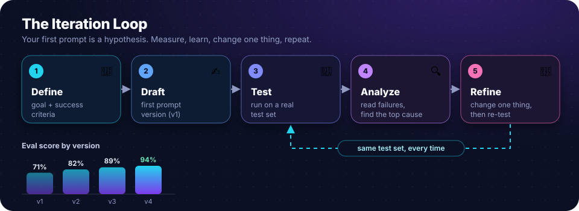

On this page
- 🎯 Learning Objectives
- The 12 Principles at a Glance
- 1. Be Clear and Direct
- 2. Be Specific: Replace Fuzzy Words with Numbers
- 3. Give Context and Explain the "Why"
- 4. Say What To Do (Positive Framing)
- 5. Show Examples (The Preview of Few-Shot)
- 6. Structure the Prompt with Delimiters
- 7. Specify the Output Format
- 8. Give the Model Room to Think
- 9. Break Complex Tasks Down
- 10. Allow Uncertainty (Kill Hallucinations)
- 11. Avoid Leading the Model (Avoid Flattery & Bias)
- 12. Iterate and Test
- 🩺 Diagnosis Table: Match the Symptom to the Principle
- 💡 Common Mistakes & How to Spot Them
- 🧪 Try It Now
- 🔑 Key Takeaways
- 🏋️ Exercises
- ✅ Quick Quiz
📏 Module 03: Core Principles
🟢 Stage 1 · Foundations · ⏱️ ~2 hours
Suppose a friend visits you from out of town and asks: "Where should I eat lunch?"
If you answer: "Go to a good place nearby", they will probably wander around aimlessly and end up at a mediocre fast-food joint.
To help them, you naturally ask yourself: Do they want quick street food or a quiet cafe? Are they vegetarian? What is their budget? Then you give them exact directions: "Walk 200 meters past the metro station, look for the green awning of Sharma Sweets, and order the chole bhature."
Prompt engineering works the exact same way. When you give the AI vague directions, it wanders into generic territory. When you give it clear, structured guidance with context and boundaries, it hits the target on the first try.
In this module, you will learn the 12 core principles that govern every great prompt. Once you understand these 12 rules, you will never stare at a blank prompt box wondering what to type.
🎯 Learning Objectives
By the end of this module, you will be able to:
- Apply the 12 core principles to any everyday or technical task.
- Replace fuzzy, subjective words with clear, measurable instructions.
- Frame instructions positively so the model focuses on what you want.
- Diagnose why an output failed and know immediately which principle fixes it.
The 12 Principles at a Glance
| # | Principle | The One-Sentence Rule |
|---|---|---|
| 1 | Be clear and direct | State the exact action you want; do not drop vague hints. |
| 2 | Be specific | Replace vague adjectives with numbers, lengths, and exact criteria. |
| 3 | Explain the "why" | Tell the model why a constraint exists so it makes smart judgment calls. |
| 4 | Say what to do | Focus on the positive action rather than a long list of prohibitions. |
| 5 | Show examples | Give a sample of what great output looks like. |
| 6 | Structure the prompt | Use sections, bullet points, and delimiters to organize your thoughts. |
| 7 | Specify the format | Dictate the shape, tone, length, and structure of the final answer. |
| 8 | Give room to think | Ask the model to reason through difficult problems before giving its final answer. |
| 9 | Break big tasks down | Split complicated workflows into sequential, manageable steps. |
| 10 | Allow uncertainty | Give the model explicit permission to say "I don't know" to prevent guessing. |
| 11 | Avoid leading the model | Ask neutral questions so the model doesn't just agree with your bias. |
| 12 | Iterate and test | Treat your first prompt as a draft; refine one variable at a time. |
👔 Non-Tech Lens · How Great Managers Delegate: Think of these principles as how an experienced manager briefs their team. They don't say "Fix this presentation". They say: "Review slides 4 to 8 before 3:00 PM today. Cut the technical jargon so our non-technical sales clients understand our pricing, and present the final summary as three bullet points." Clarity creates quality.
💻 Tech Lens · Prompts as Interface Contracts: Treat prompt authoring like designing a software interface contract. Principles 1 through 4 define input preconditions; Principles 6 and 7 define your schema guarantees; Principle 10 defines error handling; and Principle 12 defines integration testing. Ambiguous prompts introduce flaky, non-deterministic bugs into production systems.
1. Be Clear and Direct
Models take you literally. If you hint at what you want, the model will answer the literal question rather than doing the actual work.
❌ Weak
Can you maybe take a look at this email and see if it could be better?(The AI will reply with vague suggestions like "You could try making it friendlier.")
✅ Strong
Rewrite the email below to be 30% shorter and more persuasive for a potential corporate sponsor. Keep all dates and figures exactly as they are.(The AI immediately produces the rewritten email.)
💡 Use strong action verbs: Say "Rewrite", "Extract", "Classify", "Summarize", or "Audit". Avoid passive phrasing like "Could you possibly..."
2. Be Specific: Replace Fuzzy Words with Numbers
Every time you catch yourself writing a fuzzy adjective, replace it with a concrete measurement.
| Vague word | Concrete replacement |
|---|---|
| "Make it short" | "Keep the response under 120 words or 4 bullet points." |
| "Keep it simple" | "Explain this so an intelligent 12-year-old can follow it without technical terms." |
| "Give me some ideas" | "Provide exactly 5 ideas, each targeting a different customer segment." |
| "Professional tone" | "Formal business tone: no slang, no contractions, and no exclamation marks." |
| "Fast code" | "Python 3.11, $O(n)$ time complexity, using only the standard library." |
3. Give Context and Explain the "Why"
When you tell an AI why a rule exists, it applies common sense to edge cases. When you only give an arbitrary rule, it follows it blindly or misses the spirit of the instruction.
❌ Weak
Never use bullet points in this summary.✅ Strong
This summary will be read aloud as a 60-second voiceover for a company video. Write in natural, flowing conversational sentences. Do not use bullet points, tables, web links, or parenthetical acronyms because they sound awkward when read aloud.By explaining that the text will be spoken aloud, the model also avoids other spoken pitfalls (like strange punctuation or URLs) without you having to list twenty separate negative rules.
4. Say What To Do (Positive Framing)
Tell the model what path to take, rather than trying to wall off every path it shouldn't take.
Think about telling a toddler: "Don't spill the milk!" Their brain immediately visualizes spilling the milk. Saying "Hold the cup with two hands" tells them the exact physical action to take.
| ❌ Negative prohibition | ✅ Positive action |
|---|---|
| "Don't write a long introduction." | "Start immediately with the first action item." |
| "Don't use corporate buzzwords." | "Use plain, everyday conversational language." |
| "Don't make up facts." | "Answer using only the text inside <source>. If an answer is not there, write: Information not available." |
5. Show Examples (The Preview of Few-Shot)
A single good example communicates tone, format, length, and nuance better than a full page of written rules.
If you want customer feedback categorized in a specific way, provide one sample input and your ideal output before asking it to categorize ten new ones. (We will master this technique in Module 04.)
6. Structure the Prompt with Delimiters
When a prompt gets longer than a couple of sentences, organize it with clear headings and tags:
<role>
You are an experienced customer support manager for a home appliance store in Delhi.
</role>
<task>
Draft a polite email response to the customer complaint below.
</task>
<rules>
1. Acknowledge their frustration with the delayed washing machine delivery.
2. Offer free installation and a ₹500 store voucher as compensation.
3. Keep the entire response under 150 words.
</rules>
<complaint>
I ordered a washing machine 6 days ago with promised 24-hour delivery. Your delivery team hasn't called, and customer care hung up on me twice.
</complaint>Organizing your prompt like this makes it easy for the model's attention mechanism to keep instructions and data separate.
7. Specify the Output Format
Never leave the visual shape of the answer to chance. State whether you want:
- A Markdown table with specific column names.
- A bulleted list ordered from highest to lowest priority.
- A single concise paragraph.
- Raw JSON matching a specific template.
💡 Omit the chit-chat: If you are pasting AI outputs into spreadsheets or reports, add this line: "Provide only the final table. Do not include introductory remarks, commentary, or sign-offs."
8. Give the Model Room to Think
When you ask someone a difficult math or logic problem and demand they answer in half a second, they often make a careless blunder. But if you tell them: "Take a piece of scrap paper, write down your working, and then tell me the answer", their accuracy skyrockets.
The exact same thing happens with AI. If you force the model to output the final answer immediately, it has to guess the first token without calculating the steps.
Problem: A store in Jaipur sold 45 shirts on Monday, 12 fewer on Tuesday, and twice Tuesday's total on Wednesday. What were the total sales over all three days?
Before giving the final number, write out the calculation step by step on separate lines. Then state: Total = [number].9. Break Complex Tasks Down
If you give an AI an overwhelming task with 8 different stages (researching, outlining, drafting, checking facts, formatting, translating), it will rush through each part and produce mediocre work.
Instead, break the task into clear steps:
- "Step 1: Outline the 4 main arguments."
- "Step 2: For each argument, list one supporting piece of evidence."
- "Step 3: Write the final draft using the outline and evidence."
10. Allow Uncertainty (Kill Hallucinations)
AI models are trained to be eager assistants. If you ask a question and the answer doesn't exist, the model feels immense statistical pressure to supply something that sounds plausible.
Break this pressure by giving it permission to say "I don't know":
Based ONLY on the employee handbook attached below, answer this question:
"What is our policy on paternity leave for contract staff?"
If the handbook does not explicitly mention contract staff, state: "The provided handbook does not cover paternity leave for contract staff." Do not guess or extrapolate.11. Avoid Leading the Model (Avoid Flattery & Bias)
Models have a known tendency called sycophancy: they tend to agree with whatever opinion you suggest in your prompt.
❌ Leading prompt: "Don't you think our brand should switch to a bright neon logo to appeal to teenagers?" (The AI will agree: "Yes, neon colors are vibrant and create immediate youth appeal...")
✅ Neutral prompt: "We are evaluating whether to change our logo to bright neon to reach teenagers. Present the three strongest arguments in favor of this change, and the three biggest risks or drawbacks."
12. Iterate and Test
No prompt engineer writes a perfect prompt on their first attempt every time.
Treat your first prompt as an experiment. Test it on three different examples. Look at where the model made an odd choice, adjust one single parameter or instruction, and test again.

🩺 Diagnosis Table: Match the Symptom to the Principle
When an AI response is disappointing, use this cheat sheet to fix it:
| What went wrong | Likely cause | The principle to apply |
|---|---|---|
| The output is generic, boring corporate fluff. | Missing context and audience details. | Principle 2 & 3 (Be specific; give the "why"). |
| The response is way too long and rambles. | No length or format constraint. | Principle 7 (Specify output format and word limit). |
| The model ignored rule #4 out of 10. | Too many rules buried in a wall of text. | Principle 6 & 9 (Structure with tags; break into steps). |
| The model made up a fake statistic or date. | No source provided, no permission to be unsure. | Principle 10 (Allow uncertainty / provide source). |
| The model gave you polite conversational fluff before the answer ("Certainly! I would be delighted to..."). | Didn't tell it to omit preamble. | Principle 7 ("Output only the result. No intro."). |
| The model agreed with your questionable idea. | Leading question. | Principle 11 (Ask neutrally for pros and cons). |
💡 Common Mistakes & How to Spot Them
| Mistake | What you see | How to tell you got it right |
|---|---|---|
| The Prohibition Trap | A prompt with eight lines of "Don't do X, don't do Y, don't do Z". | You rewrite it into two positive sentences describing exactly what good looks like. |
| The Unrealistic Expectation | Asking for a full 20-page market analysis in one single prompt. | You ask for a table of contents first, review it, then generate one section at a time. |
| The Silent Assumption | Assuming the model knows your company's abbreviations (e.g., "PO", "PRD", "L1"). | You spell out acronyms the first time they appear in the prompt. |
🧪 Try It Now
Open your chat app and test this before-and-after prompt on a real topic you care about:
- Test Prompt A (Negative framing):
"Write an email to my team about our project deadline. Don't sound mean, don't be too casual, and don't make it too long." - Test Prompt B (Positive framing with context):
"Write a 75-word email to our engineering team reminding them of our Friday 5:00 PM code freeze. Tone: Calm, encouraging, and clear. State what needs to be submitted and who to contact if a blocker arises."
Compare the two outputs. Notice how Prompt B sounds like a seasoned manager, while Prompt A sounds anxious and stiff.
🔑 Key Takeaways
- Clarity, specificity, and context solve 80% of all prompting problems.
- Always explain the why behind your instructions. Reasons allow models to make smart judgment calls.
- Frame your instructions positively: tell the model what to do, not just what to avoid.
- Give the model room to think through difficult calculations or reasoning before stating the final answer.
- Give explicit permission to say "I don't know" to prevent made-up facts.
🏋️ Exercises
Exercise 3.1: Turn Negatives into Positives
Rewrite this prompt using positive instructions: "Don't write like an AI, don't use long words, and don't make it boring."
View Solution & Explanation
A strong positive rewrite:
Write in a lively, conversational voice using short, plain English words—as if explaining the idea to a smart friend over a cup of coffee. Keep sentences under 15 words and include one relatable real-world comparison.Explanation: Instead of guessing what "not boring" means, the model now has actionable instructions: short words, under 15 words per sentence, and a relatable analogy.
Exercise 3.2: Diagnose and Cure a Broken Prompt
A marketing manager at an edtech startup in Delhi writes this prompt: "Write a tweet announcing our new data science course."
They receive a generic tweet filled with six rocket emojis and empty hype ("Level up your career today! 🚀🚀"). Identify three missing principles and write a complete prompt.
View Solution & Explanation
Missing Principles:
- Principle 2 (Be specific): No course details, pricing, duration, or key highlights provided.
- Principle 3 (Context & Audience): Who is this for? College students or working professionals?
- Principle 7 (Format & Constraints): No limit on emojis, no hashtags specified, no call to action.
The Strong Rewrite:
You are a social media copywriter for an edtech institute in Delhi.
Write a single post for X (formerly Twitter) announcing our new 8-week weekend Data Science boot camp starting next month.
Key facts:
- Designed for working professionals (classes on Saturday and Sunday mornings).
- Focus: Python, SQL, and practical machine learning projects.
- Live instructor sessions + 1-on-1 resume reviews.
- Early bird discount: ₹5,000 off before the 15th.
Constraints:
- Length: Under 240 characters.
- Tone: Professional, practical, and motivating. No breathless hype.
- Include one clear call to action: "Link in bio to view syllabus".
- Maximum 1 emoji and 2 relevant hashtags (#DataScience #CareerGrowth).✅ Quick Quiz
- Why are positive instructions generally more effective than negative instructions?
• A) Because AI models have feelings and dislike negativity.
• B) Because positive instructions clearly define the target behavior, whereas negative instructions leave infinite bad alternatives open.
• C) Because negative words cost twice as many tokens. - Where should the model's step-by-step reasoning be placed relative to the final answer on a complex problem?
• A) After the final answer as a footnote.
• B) It makes no difference.
• C) Before the final answer, so the reasoning informs the token prediction of the result. - If an AI model repeatedly agrees with your flawed assumptions during a brainstorming session, what principle did you violate?
• A) Principle 11 (Avoid leading the model / avoid sycophancy).
• B) Principle 7 (Specify format).
• C) Principle 1 (Be clear and direct).
View Answers
- B — Telling an AI what to do provides a specific, narrow target. Telling it what not to do leaves all other possibilities open.
- C — Because autoregressive models generate text from left to right, thinking through the steps first ensures that the final tokens are calculated based on sound intermediate logic.
- A — Asking leading questions invites the model's natural sycophancy. Ask neutrally and explicitly request opposing arguments.
Author: Vicky (abvicky.in) · Platform built by Manikarnika Technologies · © 2026 All rights reserved. ⬅️ Module 02 · ➡️ Module 04 — Zero-Shot, Few-Shot & Role Prompting